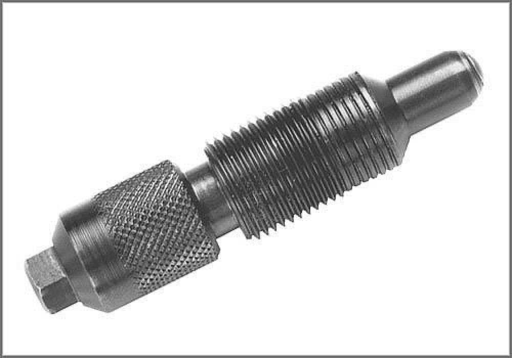
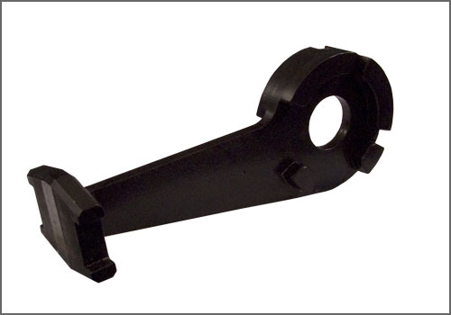

Locking Pin - AST Tool # 3242
Locking Pin
AST tool# 3242

Used to lock the crankshaft in T.D.C. position on VW/Audi 2.7L and 2.8L V-6 engines.
Also applicable to: Audi with 4.2L V8(4v) (BVJ) and 4.2L V8(5v)(BHF) engines.
- Used to Lock the Crankshaft in the TDC Position
- Applicable to: VW/Audi 2.7L and 2.8L V-6 Engines
Contact AST for pricing.
Assenmacher Specialty Tools
1-800-525-2943
Additional Tools Possibly Required:

3243 - Camshaft Alignment Tool

3391 - Camshaft Alignment Tool

T 40005 - Audi Cam Align. Tool

T 40047 - Setting Gauge